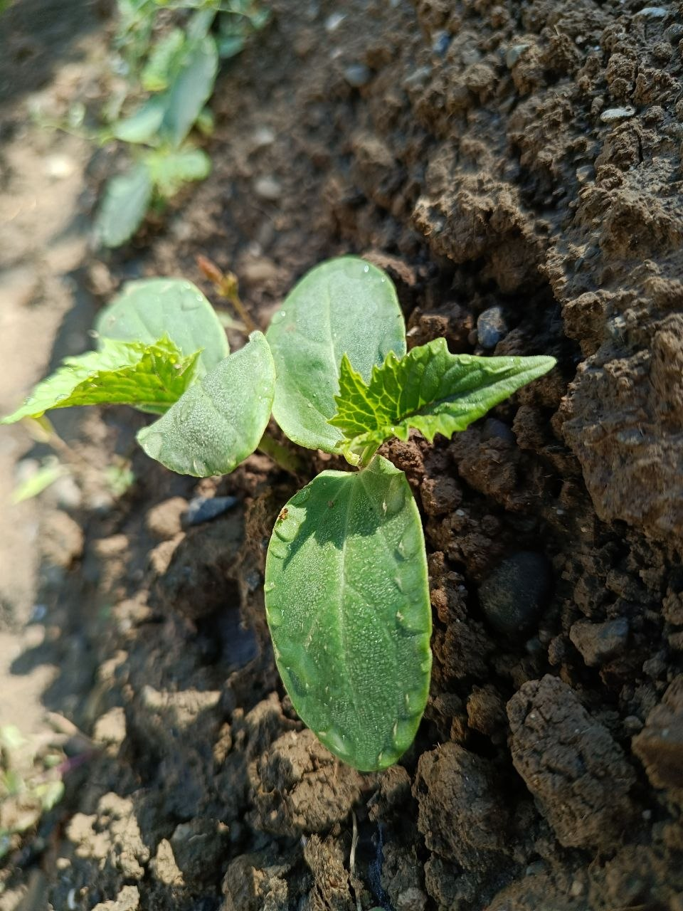
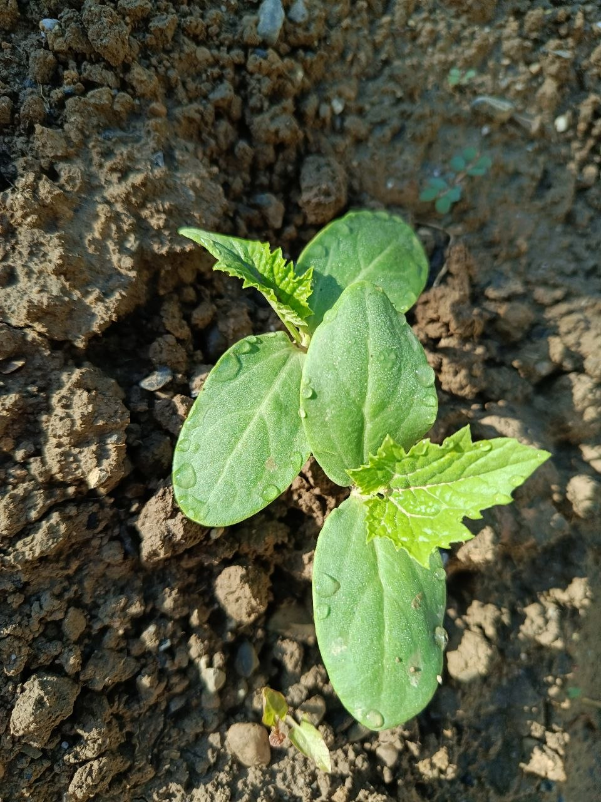
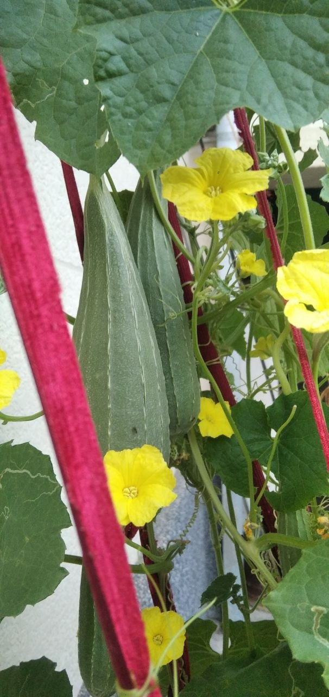
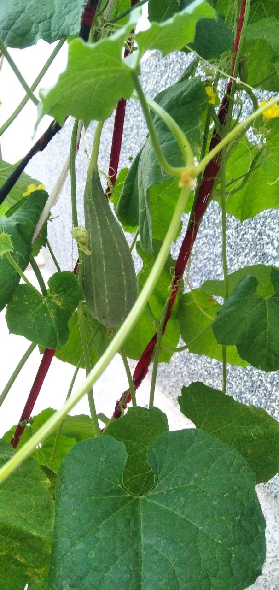

Mahalliy yetishtirish
Urug‘, tuproq, suv ta’minoti va parvarish usullarini Jizzax sharoitida sinash.
✳ O‘SIMLIKDAN FOYDALI MAHSULOTGACHA
Luffa EcoCycle — luffa o‘simligini yetishtirish, tolali xomashyoni qayta ishlash va kundalik foydalanish uchun sodda, uzoq xizmat qiladigan mahsulotlar yaratish konsepsiyasi.
Amaliy tajriba: uy hovlisidagi kichik maydonda luffa yetishtirildi va 45 ta tayyor mochalka olindi. 2 gektar — keyingi kengaytirish rejasi.
Bizning maqsad — luffani shunchaki yetishtirish emas, balki xomashyo, qayta ishlash, sifat nazorati, qadoqlash va sotuvni bitta izchil modelda sinab ko‘rish.
Bosqichma-bosqich yondashuv resurslarni ehtiyotkor ishlatishga yordam beradi: avval kichik partiya va xaridor fikri, keyin esa isbotlangan talab asosida kengayish.
Urug‘, tuproq, suv ta’minoti va parvarish usullarini Jizzax sharoitida sinash.
Quritish, urug‘ini ajratish, tozalash, kesish va partiyalarni saralash.
Mahsulot vazifasiga mos shakl, minimal qadoq va tushunarli yorliq.
Sifat, talab, tannarx va pul oqimi tekshirilgach, quvvatni oshirish.
Mahsulotlar — bozor sinovi uchun mo‘ljallangan takliflar. Tasvirlar va nomlar konseptual; tijoriy assortiment prototip va mijoz fikridan keyin tasdiqlanadi.
 01 / HAMMOM
01 / HAMMOM
Quritilgan luffaning tolali ichki qismidan kesilgan, yuvinishda ishlatiladigan gubka.
Amalda olingan mahsulot: 45 dona 02 / OSHXONA
02 / OSHXONA
Luffa tolasi asosidagi oshxona tozalagichi. Idish yuzalarida tirnalish va chidamlilik sinovidan o‘tkazish kerak.
Keyingi mahsulot prototipi 03 / SOVG‘A TO‘PLAMI
03 / SOVG‘A TO‘PLAMI
Mahalliy luffa mochalkasi va mos sovun bilan yig‘iladigan sovg‘a to‘plami.
Kelajakdagi assortiment g‘oyasiInternetdagi mahsulot rasmlari — bozor namunalari va dizayn yo‘nalishini ko‘rsatish uchun; ular Luffa EcoCycle mahsuloti yoki bizning ishlab chiqargan mahsulotimiz deb taqdim etilmaydi. Mahsulot xavfsizligi va tozalash yo‘riqnomasi sotuvdan oldin tekshiriladi.
Quyidagi rasmlar loyiha jarayonida olingan haqiqiy suratlar: ko‘chat, o‘sayotgan luffa, gul va mevalar. Uy hovlisidagi kichik maydondan 45 ta tayyor mochalka olindi. Bu tajriba 2 gektarlik natijaga tenglashtirilmaydi.




Bu yo‘nalishlar xalqaro amaliyotdagi misollar va dastlabki g‘oyalardir. Luffa EcoCycle’da ular hali ishlab chiqarilayotgani yoki daromad keltirayotgani haqida da’vo qilinmaydi.

Yetilgan, sog‘lom mevalardan urug‘ ajratib, quritib saqlash mumkin. Avvalo keyingi mavsum uchun urug‘ zaxirasi; ortiqcha urug‘ni sotish esa unuvchanlik sinovidan keyingi imkoniyat.
Urug‘ni yig‘ish bo‘yicha manba ↗
Toza, kasallanmagan po‘stloq va poya qoldiqlarini boshqa organik materiallar bilan kompostlashni sinash mumkin. Kompost yetilishi va o‘simlikka mosligi tekshirilmasdan o‘g‘it sifatida sotilmaydi.
Kompostlash misoli ↗
Sovun va kimyoviy tozalagich qoldiqlaridan tozalangan, sintetik qismlari yo‘q tabiiy luffani mayda qilib kompostlash varianti ko‘rib chiqiladi.
Amaliy qo‘llanma ↗
Internetda luffa urug‘i yog‘i mahsulotlari uchraydi, ammo bu yo‘nalish urug‘ miqdori, presslash uskunasi, laboratoriya sifati va talabni tekshirishni talab qiladi. Hozircha tayyor mahsulot yoki tasdiqlangan biznes yo‘nalishi emas.
Bozor namunasi ↗iRasmlar tashqi manbalardan olingan illyustrativ bozor/amaliyot namunalari; Luffa EcoCycle’ning o‘z mahsuloti sifatida ko‘rsatilmaydi. Rasm manbalari har bir kartada berilgan. Tijoriy foydalanishdan oldin litsenziya va ruxsat shartlarini tekshiring.
Jarayonning har bir qismida kuzatiladigan ko‘rsatkichlar bo‘lishi kerak: suv, hosildorlik, yaroqli xomashyo, mehnat va sotilgan mahsulot.
Tuproq tahlili, suv manbai, nav tanlash, ekish sxemasi va tayanch tizimini agronom bilan tasdiqlash.
Sug‘orish, begona o‘t, kasallik va zararkunandalarni kuzatish; hosil sanasi va miqdorini qayd etish.
Ventilyatsiyali, quruq joyda ishlov berish; urug‘, po‘stloq va tolani ajratish, tozalash va saralash.
O‘lcham, namlik, ko‘rinish va nuqsonlar bo‘yicha ichki sifat mezonlarini yaratish; partiyani belgilash.
Mahalliy do‘konlar, onlayn katalog, mehmonxona/spa va korporativ sovg‘a hamkorlarida talabni sinash.
“Ekologik” degan so‘zning o‘zi yetarli emas. Har bir da’vo o‘lchanadigan amaliyot va tekshiriladigan dalil bilan tasdiqlanishi kerak.
Amaliy reja bilan tanishish ↗Toza va mos organik qoldiqlarni kompostlash imkonini sinash. Kasallangan yoki ifloslangan qoldiqlarni alohida boshqarish.
Kelajakdagi amaliyot — sinov va qayd zarurSug‘orish jadvali va suv sarfini qayd etish; tomchilatib sug‘orishni mahalliy sharoit va iqtisodiy hisobga ko‘ra baholash.
Maqsad — suv sarfini o‘lchashMahsulotni himoya qiladigan, imkon qadar sodda qadoqni tanlash; material tarkibi va qayta ishlanishi bo‘yicha da’voni tekshirish.
Material yetkazib beruvchi hujjati kerakPartiya raqami, ishlab chiqarish sanasi va nazorat ro‘yxati orqali nuqson va qaytarish sabablarini kuzatish.
Jarayon hujjatlashtiriladiQuyidagi reja — dastlabki operatsion ssenariy, tasdiqlangan agronomik ko‘rsatma yoki kafolatlangan hosil prognozi emas. Tuproq, suv, nav va mahalliy mavsum bo‘yicha mutaxassis bilan moslashtirish shart.
Rejalashtirish taxmini: avval 0,25–0,5 ha pilot maydonida nav, suv, tayanch, kasallik va ishlov jarayonini tekshirish. Natijalar qoniqarli bo‘lsa, keyingi mavsumda maydonni kengaytirish.
Oylar iqlim, nav va ekish usuliga qarab siljishi mumkin. Aniq sanani mahalliy agronom bilan belgilang.
Quruq, shamollatiladigan saqlash joyi; yuvish/tozalash uchun gigiyenik zona; kesish, saralash va qadoqlash uchun alohida ish stoli. Oziq-ovqat ishlab chiqarish bilan aralashtirmaslik va changni boshqarish kerak.
Asosiy xavflar: suv ta’minoti, hududiy sovuq, nav va hosildorlik noaniqligi, quritishdagi yo‘qotish, mahsulot sifati, mavsumiy pul oqimi va talab tasdiqlanmaganligi. Katta sarmoyadan oldin pilot, xaridor suhbati va yozma xarajat takliflari bilan tekshiring.
Bu kalkulyator rejalashtirish uchun. Kiritilgan qiymatlar sizning taxminlaringiz bo‘lib, haqiqiy sotuv, xarajat yoki foyda natijasi emas.
Tushum = sotilgan dona × sotuv narxi. O‘zgaruvchan xarajat sotilgan donaga bog‘liq. Operatsion natija = tushum − o‘zgaruvchan xarajat − oylik doimiy xarajatlar.
Yer tayyorlash, sug‘orish, tayanch, urug‘, ish haqi, qayta ishlash va qadoqlash xarajatlarini real takliflar bilan yangilang. Soliq, kredit foizi va mavsumiylik hozir alohida modellashtirilmagan.
Talqin: bu soddalashtirilgan oylik ssenariy. Agar zararsizlik nuqtasi rejalashtirilgan sotuvdan yuqori bo‘lsa yoki bir dona marjasi manfiy bo‘lsa, narx, tannarx va doimiy xarajatlarni qayta ko‘rib chiqing.
Investor, grant beruvchi yoki xaridor uchun ishonch — da’volarni oshirib ko‘rsatmaslikdan boshlanadi.
Luffa o‘simligining yetishtirish va qayta ishlash bosqichlari loyiha jarayonining umumiy tavsifidir; aniq nav va agrotexnika mahalliy sharoitda tekshiriladi.
Jizzax sharoitida luffa yetishtirish, tabiiy mahsulotlar, qadoqlash va qoldiqlarni mas’uliyatli boshqarish — loyiha konsepsiyasi.
Barcha boshlang‘ich raqamlar va 2 gektarlik ishlar ketma-ketligi rejalashtirish uchun berilgan, bozor taklifi yoki tasdiqlangan prognoz emas.
Hosil, suv sarfi, xaridorlar, buyurtmalar, sertifikatlar va ekologik ko‘rsatkichlar faqat hujjat yoki o‘lchov bilan tasdiqlangach kiritiladi.
Yetishtirish, qayta ishlash, qadoqlash, bozor sinovi yoki investitsiya bo‘yicha hamkorlik taklifingiz bormi? Aloqa ma’lumotlari tasdiqlangach, shu bo‘limga qo‘shiladi.
Eslatma: hello@example.com — vaqtinchalik namuna manzil. Saytni e’lon qilishdan oldin haqiqiy loyiha emailiga almashtiring.